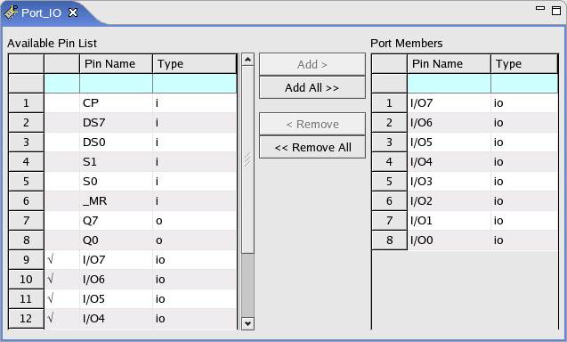

Editing a port
About this task
Whatever action you selected:
- to define a new port from scratch,
- to make changes to an existing port,
the way to edit the port is always the same.
Before you begin
Make sure that a port has been created.
Procedure
-
Open the setup editor of the port you want to edit. If the port is a new one, there are no
pins in the Port Members area.

Results
In the Available Pin List, the pins in the port are indicated with "√".

Functional changes
- Introduced before SmarTest 6.3.2